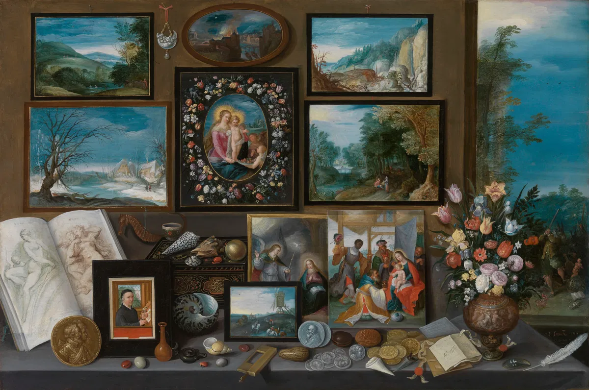

Gallery
Below you will find some of the artwork that we have on display for the month of February and then join us on Saturday, March 14th, 2026 for an auction of the artwork.
All proceeds will go towards research and purchasing of more of this unique artwork.
Arts in Art: Cabinets of Curiosity and the Rise of the Gallery Painting
In the 17th century, emanating from Antwerp, a new genre of artwork came on the scene: paintings of paintings, works populated by a lush array of meta-images.
From its origins in picturing private curiosity cabinets to its later use in documenting increasingly public collections, Thea Applebaum Licht charts the course of this alluring aesthetic tradition.

Frans Francken the Younger, The Cabinet of a Collector, 1617 —
There is something ineffably intimate about the painting Cabinet of a Collector (1617). A sense of closeness, as though you have been drawn, alone, into this alcove crammed with beautiful things.
The wall, on which a dizzying array of images and objects are hung, is yours to reach out and touch. Desiccated creatures from far-off seas are pinned over loose sketches and between paintings of lush, deep-set landscapes. In shadow boxes, small animal forms catch light alongside piles of coins, classical profiles glinting.
In a feat of forced perspective, gleaming shells and shark's teeth jut off the table toward you. They look heavy and cool to the touch. The spread is a daze, a visual feast. But to its right, through an open doorway, there's something stranger going on. . .
Imagining an Idle Countess: George Wightwick's The Palace of Architecture
In 1840, British architect George Wightwick published a world history of architecture in the Romantic mode, inviting readers to enter a vast garden where Buddhist iconography rubs shoulders with Greek temples and Egyptian pyramids gaze upon Gothic cathedrals. His intended audience? Idle women. Matthew Mullane revisits this visionary but ultimately unpopular text, revealing the legacy of attempts to gatekeep the realms of imagination and fantasy pertaining to the built environment.
Did You Know?
Mary Gartside, An Essay on a New Theory of Colours and on Composition in General (London: J. Barfield, 1808).
Mary Gartside's An Essay on a New Theory of Colours is the expanded edition of An Essay on Light and Shade (1805), “one of the rarest and most unusual books about colour ever published”, claims Alexandra Loske, a historian of colour and curator at Brighton's Royal Pavilion. On the surface, this tract appears to sit neatly within the tradition of instructional artist's manuals.
Indeed, Mary Gartside worked as a watercolour teacher and botanical painter, exhibiting her drawings at the Royal Academy in 1781. And yet, the Essay makes use of an intellectual palette whose spectrum exceeds Gartside’s pedagogical contemporaries. It is best remembered, rather, as an exemplar of the myriad early-nineteenth century treatises on colour — works inspired, in part, by the newfound availability of novel pigments.